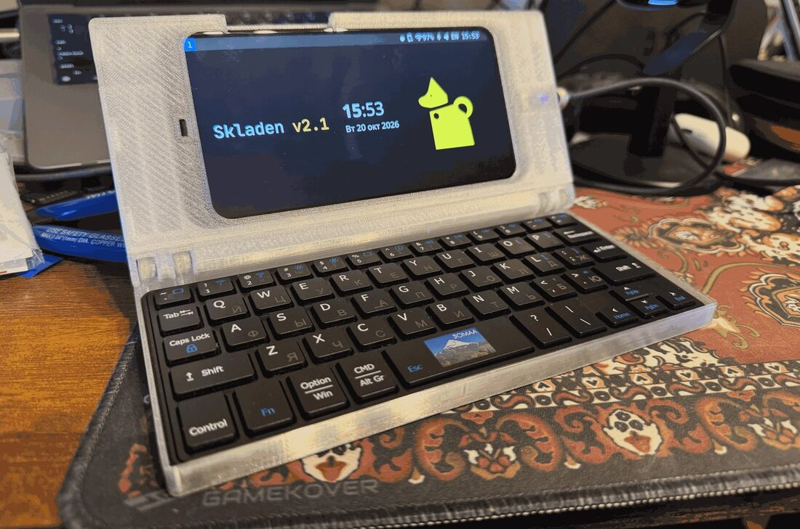
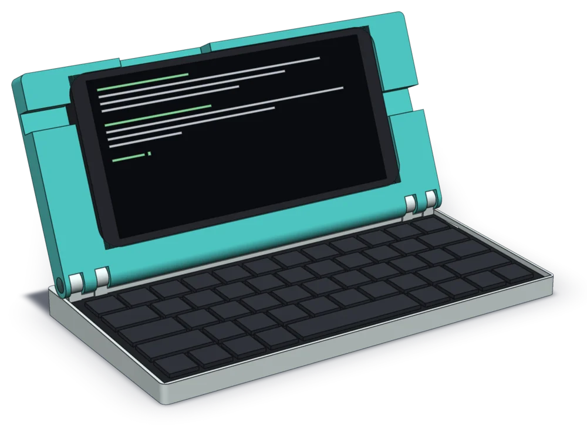
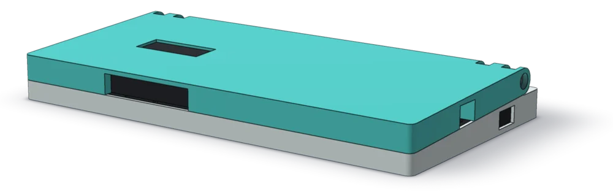

Палмтоп из телефона и клавиатуры
Mitya Labs делает Skladen: напечатанный на 3D-принтере палмтоп, который превращает Xiaomi Pocophone F1 в карманный терминал в форме ноутбука, и skladenOS, систему для него.
Skladen 2.1 напечатан и собран. skladenOS в разработке: готовых образов пока нет.

Skladen
Skladen — палмтоп, который превращает Xiaomi Pocophone F1 в карманный терминал в форме ноутбука. Название — складень: дорожная икона на петлях, две створки, которые смыкаются над тем, что в них лежит.
Крышка держит телефон под рамкой на защёлках, в основании клавиатура Jomaa KEYBOARD098RU из чехла-книжки. Всё напечатано, петли держатся на двух болтах M3. Конструкция описана кодом (build123d): размеры и проверки считаются при сборке модели.
- Телефон
- Xiaomi Pocophone F1, 155,5 × 75,3 × 9,25 мм, 182 г
- Клавиатура
- Jomaa KEYBOARD098RU
- В сложенном виде
- 24,29 мм у петли, 20,31 мм спереди
- Масса
- около 403 г по модели
Версии
| Версия | Что это | Дата |
|---|---|---|
| 2.1.0 | Skladen 2 с рамкой на защёлках; напечатан | 2026-10-20 |
| 2.0.0 | Skladen 2 под Pocophone F1, телефон на ленте; напечатан | 2026-10-06 |
| 1.0.0 | Skladen 1 под Pixel 3a XL; напечатан | 2026-10-02 |
Размеры и масса взяты из модели, замеры напечатанных экземпляров ещё не сведены. Последние правки рамки смоделированы и проверены, на печати не подтверждены.


Конструкция открыта под CERN-OHL-S-2.0. Исходники, документы и список изменений: репозиторий Skladen.
skladenOS
skladenOS — система для Skladen и других складных устройств, где экран и клавиатура соединены шарниром. Это Mobian (Debian) с оконным менеджером SXMO: лёгкий интерфейс, которым управляют жестами, кнопками громкости и внешней клавиатурой. Система учитывает вырез экрана и скруглённые углы: окна и панели не заходят под челку, даже в полноэкранном режиме.
Готовых образов для скачивания пока нет: сборка из исходников и проверка на устройстве ещё идут.
Что уже работает
- Вырез и углы
- Панель и окна отступают от выреза и перестраиваются при повороте экрана.
- Кнопки и жесты
- Питание, громкость, жесты по краям экрана; с внешней клавиатуры работает Super+Esc.
- USB
- Роль хоста или устройства выбирается сама: хаб, флешка и клавиатура работают, с компьютером поднимается USB-сеть.
- Питание
- Режимы «Баланс», «Экономия», «Ночь» и «Производительность» из меню, режим «экран не гаснет».
- Раскладки
- Английская и русская по CapsLock, экранная клавиатура с кириллицей.
- Звук и датчики
- Оба динамика, датчики через SLPI на ядре 7.x.
Проверено на рабочей сборке с Pocophone F1 и ядром 7.2. Новая сборка из исходников ещё проходит проверку на устройстве.
Как собирается
- ЯдроЯдро Mobian для SDM845 из исходников и наши патчи: Type-C и зарядка PD.
- ПакетыНастройки устройства и SXMO оформлены как deb-пакеты.
- ОбразРецепты Mobian (debos) собирают образ из ядра и пакетов.
- ПрошивкаОбраз прошивается на телефон через fastboot.
Версии ядра и рецептов зафиксированы, сборку планируется вести в CI на GitHub: образ можно будет воспроизвести из исходников.
Что дальше
- Имя, организация и чистый репозиторий
- Каркас сборки ядра с патчами, пакеты настроек, логотип
- Полная сборка ядра и образа в CI
- Проверка с обоими вариантами панели Poco F1 (ebbg и tianma)
- Иконки статус-бара, лицензия и описание репозитория
- Публичный репозиторий и первый образ
Основа и права
Skladen: конструкция открыта под CERN-OHL-S-2.0, исходником считается Python-модель.
skladenOS основан на Mobian и Debian, но не является их официальным выпуском и не связан с этими проектами. Оконный менеджер SXMO распространяется под AGPL-3.0. Прошивки Qualcomm и Xiaomi мы не распространяем: система извлекает их на самом телефоне. Лицензия кода skladenOS будет объявлена при открытии репозитория.
Логотипы Mitya Labs и skladenOS © 2026 Dmitrii Trifonov, все права защищены. Названия и логотипы остаются отличительными знаками проектов.
Где следить
Проекты ведёт организация mitya-labs на GitHub. Репозиторий Skladen открыт. Репозиторий skladenOS откроется, когда будут готовы лицензия и описание; до тех пор можно подписаться на организацию. Новости и заметки по ходу работы — в Telegram-канале.